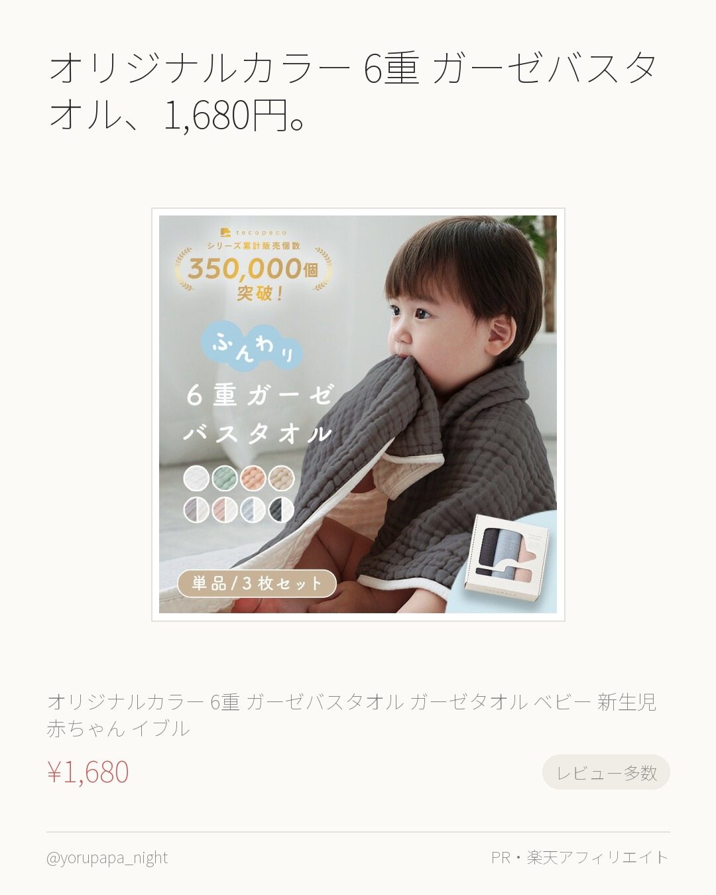
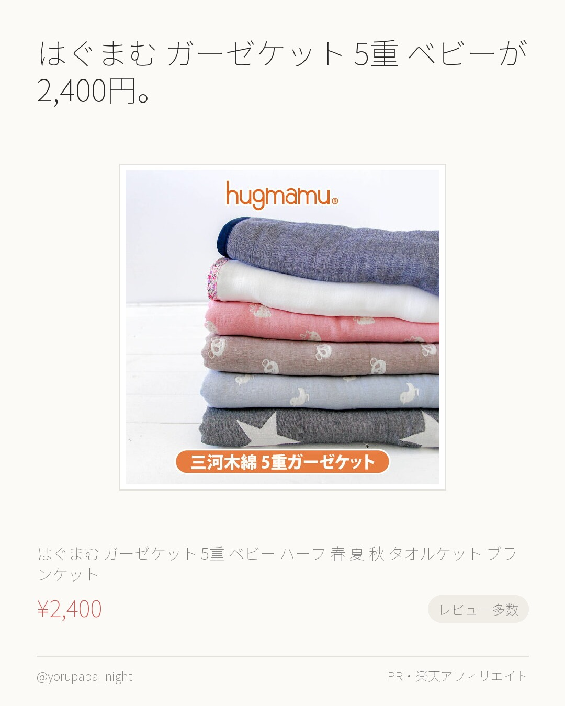
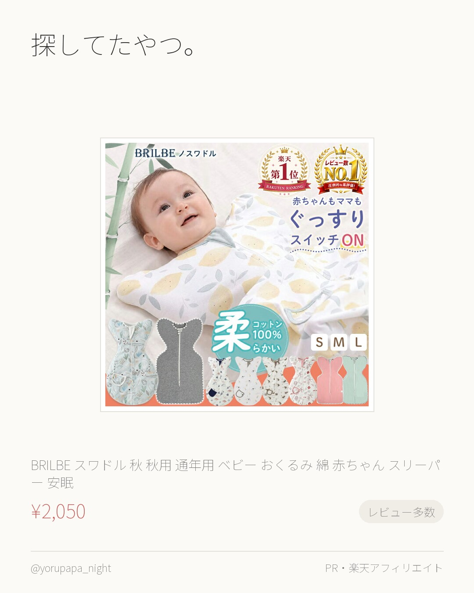
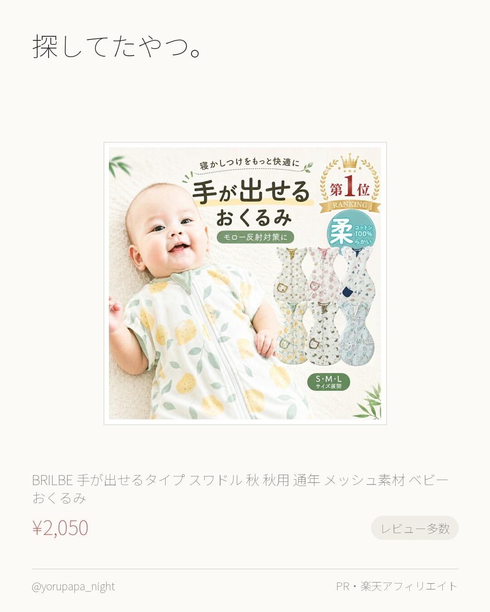
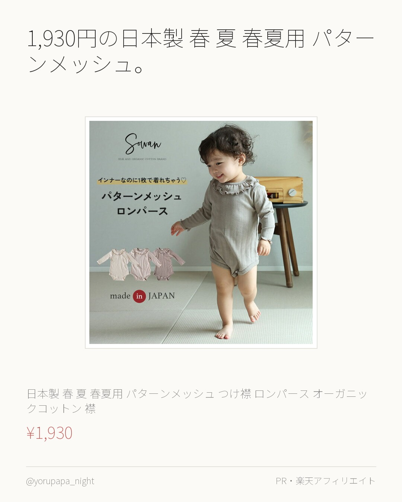
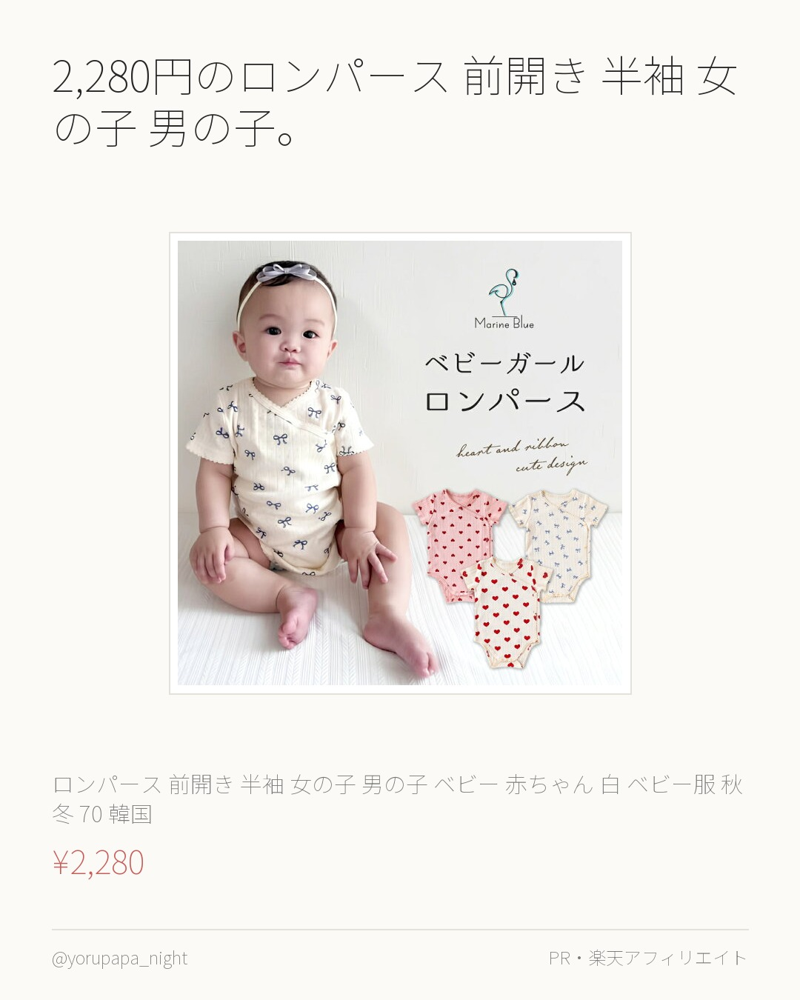
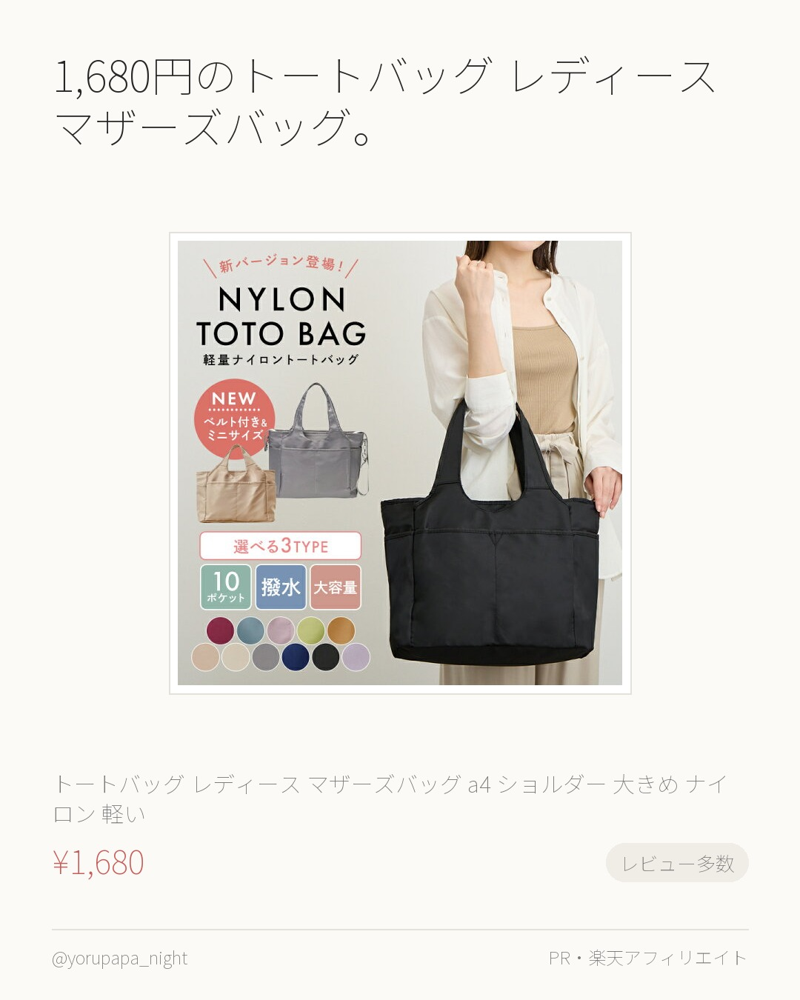
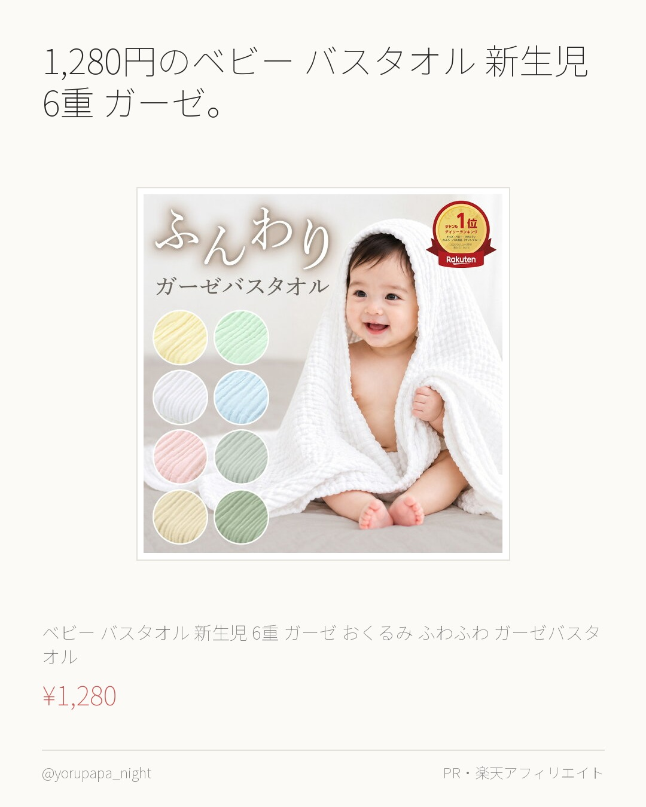
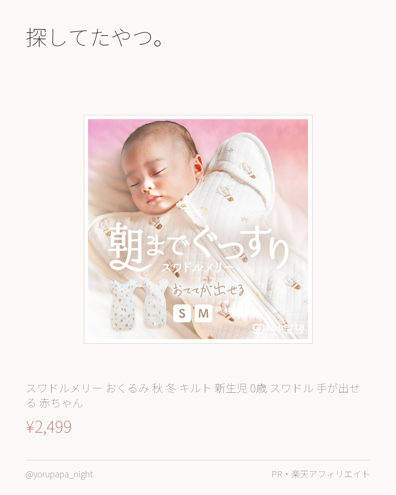
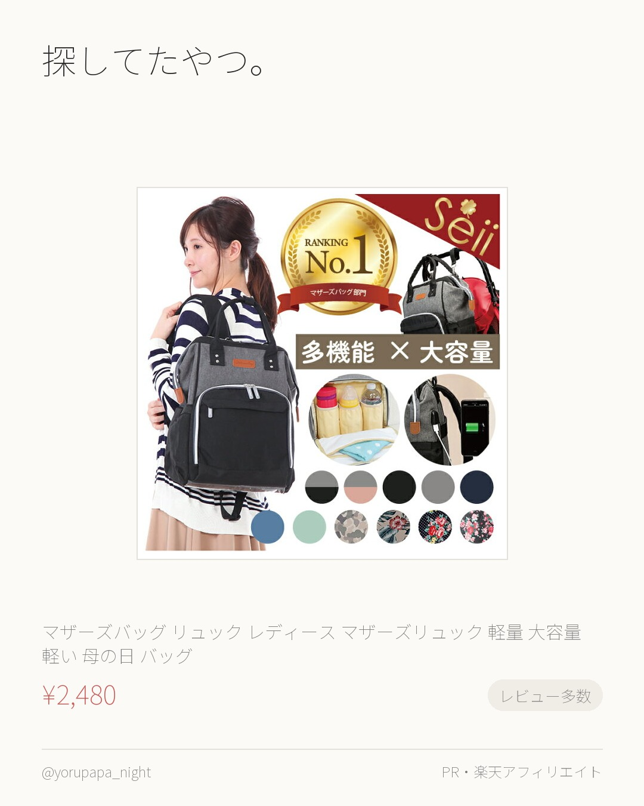

オリジナルカラー 6重 ガーゼバスタオル、1,680円。レビュー3,221件で4.69なのが決め手でした。気になってた人はぜひ。
＼楽天1位/オリジナルカラー／6重 ガーゼバスタオル ガーゼタオル ベビー 新生児 赤ちゃん イブル ガーゼケット 湯上がり おくるみ タオ
¥1,680
楽天市場で見るよるぱぱ｜日中は会社員、夜と休日は育児担当。実際に使ったものだけ。
これまでの投稿をぜんぶ見る → 楽天ROOM／よるぱぱ
オリジナルカラー 6重 ガーゼバスタオル、1,680円。レビュー3,221件で4.69なのが決め手でした。気になってた人はぜひ。
＼楽天1位/オリジナルカラー／6重 ガーゼバスタオル ガーゼタオル ベビー 新生児 赤ちゃん イブル ガーゼケット 湯上がり おくるみ タオ
¥1,680
楽天市場で見る
はぐまむ ガーゼケット 5重 ベビーが2,400円。レビュー1,795件で4.69なのが決め手でした。色違いも見てみてください。
はぐまむ ガーゼケット 5重 ベビー ハーフ 春 夏 秋 タオルケット ブランケット 新生児 赤ちゃん キッズ 子供 出産祝い おくるみ 保
¥2,400
楽天市場で見る
探してたやつ。BRILBE スワドル 秋 秋用 通年用。レビュー12,551件で4.6なのが決め手でした。迷ってるならまずこれから。
BRILBE スワドル 秋 秋用 通年用 ベビー おくるみ 綿100% 赤ちゃん スリーパー 安眠 黄昏泣き 寝ぐずり 対策 コットン 竹繊
¥2,050
楽天市場で見る
探してたやつ。BRILBE 手が出せるタイプ スワドル。レビュー8,002件で4.59なのが決め手でした。迷ってるならまずこれから。
BRILBE 手が出せるタイプ スワドル 秋 秋用 通年 メッシュ素材 ベビー おくるみ 綿100％ 寝返り対策 赤ちゃん スリーパー コッ
¥2,050
楽天市場で見る
1,930円の日本製 春 夏 春夏用 パターンメッシュ。レビュー4.77（170件）なのが決め手でした。色違いも見てみてください。
日本製 春 夏 春夏用 パターンメッシュ つけ襟 ロンパース オーガニックコットン 襟 付き 長袖 春服 薄手 60 70 80 90 肌着
¥1,930
楽天市場で見る
2,280円のロンパース 前開き 半袖 女の子 男の子。レビュー4.72（239件）なのが決め手でした。迷ってるならまずこれから。
ロンパース 前開き 半袖 女の子 男の子 ベビー 赤ちゃん 白 ベビー服 秋冬 70 韓国 新生児 コットン 誕生日 80 ネイビー 肌着
¥2,280
楽天市場で見る
1,680円のトートバッグ レディース マザーズバッグ。レビュー2,001件で4.53なのが決め手でした。迷ってるならまずこれから。
【雑誌掲載 改良版】 トートバッグ レディース マザーズバッグ a4 ショルダー 大きめ ナイロン 軽い 斜め掛け カジュアル ジム 無地
¥1,680
楽天市場で見る
1,280円のベビー バスタオル 新生児 6重 ガーゼ。レビュー4.63（427件）なのが決め手でした。使い回しが効きそう。
ベビー バスタオル 新生児 6重 ガーゼ おくるみ ふわふわ ガーゼバスタオル ガーゼタオル ベビーバスタオル 吸収性 6重ガーゼ 赤ちゃん
¥1,280
楽天市場で見る
探してたやつ。スワドルメリー おくるみ 秋 冬 キルト。レビュー4.65（340件）なのが決め手でした。気になってた人はぜひ。
スワドルメリー おくるみ 秋 冬 キルト 新生児 0歳 スワドル 手が出せる 赤ちゃん ベビー モロー反射 くま 星 月 気球 おしゃれ か
¥2,499
楽天市場で見る
探してたやつ。マザーズバッグ リュック レディース。レビュー4,187件で4.52なのが決め手でした。色違いも見てみてください。
マザーズバッグ リュック レディース マザーズリュック 軽量 大容量 軽い 母の日 バッグ 保温 保冷 がま口 旅行リュック ママリュック
¥2,480
楽天市場で見る